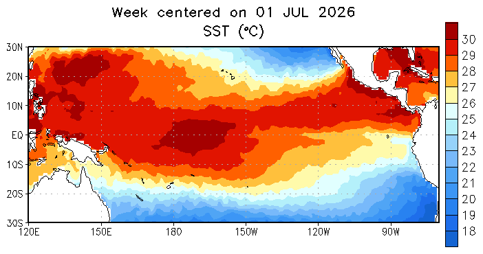
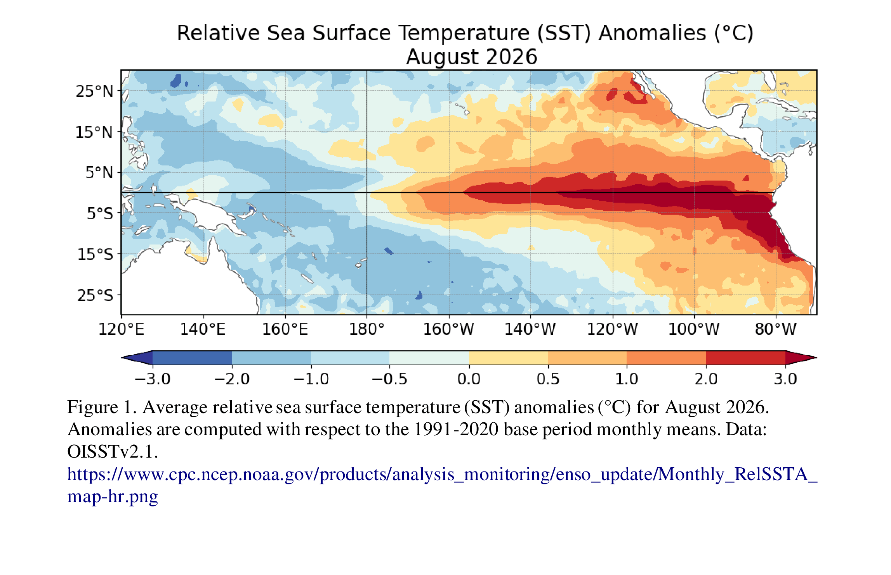
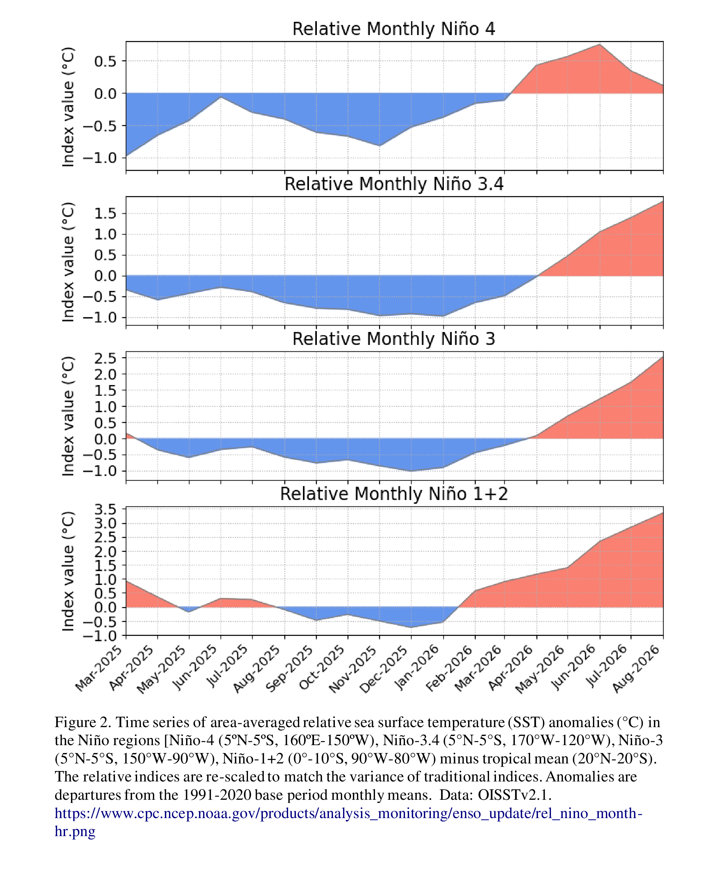
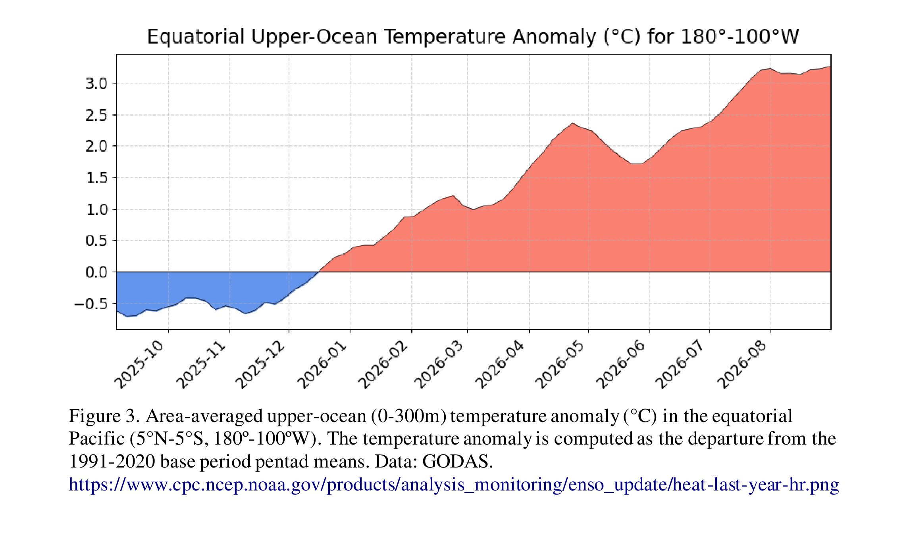
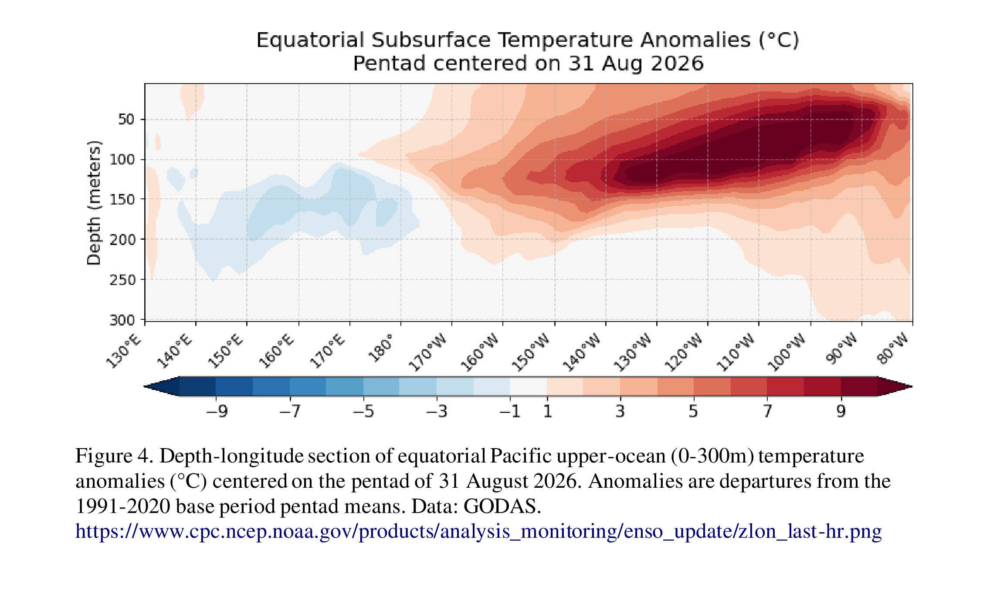

🌊 El Niño & La Niña
📡 Current status
ENSO Alert System Status: El Niño Advisory Synopsis: El Niño is strengthening, with a greater than 90% chance of a very strong event during the Northern Hemisphere fall and winter 2026-27. El Niño strengthened further over the past month, with sea surface temperature anomalies exceeding +3.0°C in the eastern equatorial Pacific [Fig. 1] . Except for the Niño-4 index, which decreased to +0.1°C in August, values in the other Niño indices increased, reaching +1.8°C in Niño-3.4, +2.5°C in Niño-3, and +3.4°C in Niño-1+2 [Fig. 2] . The equatorial subsurface temperature index (average from 180°-100°W) remained steady during August [Fig. 3] , reflecting a deeper-than-average thermocline [Fig. 4] . Subsurface temperatures continued to be significantly above average, with widespread anomalies in excess of +10.0°C at depth. Low-level westerly wind anomalies and upper-level easterly wind anomalies extended from the western to the east-central equatorial Pacific. Enhanced convection and rainfall persisted from the central to the eastern Pacific, while anomalies remained suppressed over Indonesia [Fig. 5] . The traditional and equatorial Southern Oscillation indices remained negative. Collectively, the coupled ocean-atmosphere system reflected a strengthening El Niño. The CPC Official ENSO outlook , which synthesizes multiple models from North America and abroad, indicates El Niño will continue to strengthen through the end of the year [Figs. 6
-8] . During the October-December 2026 season, there is a 75% chance of a historic event that would exceed the strength of previous El Niño events dating back to 1950 (+2.5°C or more for a 3-month RONI value ). With an event of this magnitude, the chances of experiencing impacts consistent with El Niño are larger, though not guaranteed (see CPC outlooks for probabilities of seasonal anomalies). In summary, El Niño is strengthening, with a greater than 90% chance of a very strong event during the Northern Hemisphere fall and winter 2026-27. This discussion is a consolidated effort of the National Oceanic and Atmospheric Administration (NOAA), NOAA's National Weather Service, and their funded institutions. Oceanic and atmospheric conditions are updated weekly on the Climate Prediction Center web site (
🌡️ Nino 3.4 sea-surface temperature anomaly - last 24 months
📈 Every El Niño & La Niña since 1950
🔮 The forecast






🧭 What El Niño actually is
Along the equator, the Pacific has two natural states. In the neutral state, steady trade winds blow east-to-west, piling warm water into the western Pacific (the "warm pool") while cold, nutrient-rich water upwells off South America. Thunderstorms fire over the warm pool, driving a huge east-west circulation called the Walker circulation.
El Niño is when the trade winds weaken or reverse: the warm pool sloshes back east, the central and eastern equatorial Pacific warms several degrees above normal, and the storm factory moves with it. The atmosphere and ocean reinforce each other in a feedback loop (Bjerknes feedback) that can push the event to historic strength. La Niña is the mirror image - stronger trades, colder eastern Pacific.
Forecasters measure it in the Niño 3.4 region (5°N-5°S, 170°W-120°W). The Oceanic Nino Index (ONI) is that region's 3-month running SST anomaly versus the 1991-2020 average; five consecutive seasons beyond +0.5°C is an El Niño event, beyond -0.5°C a La Niña. Events come every 2-7 years and usually peak around December ("Niño" - the Christ child - named by Peruvian fishermen for that timing).
🏘️ What it means for Tennessee
El Niño winters: the Pacific jet stream strengthens and sags south, steering wet storms across the southern U.S. The typical Tennessee read is a cooler, wetter winter - more Gulf-fed rain systems, better snow/ice odds when cold air taps in.
El Niño hurricane seasons: stronger upper-level winds shear Atlantic storms apart. The Atlantic typically sees fewer, weaker hurricanes - while the East Pacific gets busier (its systems' moisture can still flood the Southwest).
La Niña winters flip the pattern: the northern jet dominates, giving Tennessee drier, warmer winters - and the following spring often brings an earlier, more active severe weather season in the Tennessee Valley, plus busier Atlantic hurricane seasons.
These are typical tendencies, not guarantees - El Niño loads the dice, it doesn't pick the roll. Pair this page with the Climate page's official CPC seasonal outlooks.